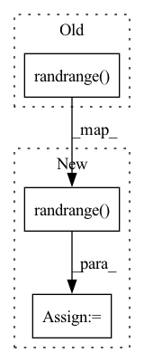

Pattern ID :31853
Before Change
def get_img_for_mosaic(self, brightness_rnd, contrast_rnd, hue_rnd, saturation_rnd, i):
img_path = self.img_files[random.randrange(0, len(self.img_files))].rstrip()
label_path = self.label_files[random.randrange( 0, len(self.img_files)) ].rstrip()
// img_path = self.img_files[i].rstrip()
// label_path = self.label_files[i].rstrip()After Change
return img_path, tensor_img, targets
def get_img_for_mosaic(self, brightness_rnd, contrast_rnd, hue_rnd, saturation_rnd):
random_index = random.randrange( 0, len(self.img_files))
img_path = self.img_files[random_index].rstrip()
label_path = self.label_files[random_index].rstrip()
In pattern: SUPERPATTERN
Frequency: 3
Non-data size: 3
Instances Fragment ID: 93105148
Project Name: vcasecnikovs/yet-another-yolov4-pytorch
Commit Name: 409de7e53ff6abac6188257b230f5a812842f2ef
Time: 2020-05-29
Author: casecnikov@gmail.com
File Name: dataset.py
M Class Name: ListDataset
N Class Name: ListDataset
M Method Name: get_img_for_mosaic(5)
N Method Name: get_img_for_mosaic(6)
M Parent Class: Dataset
N Parent Class: Dataset
M File Name: dataset.py
N File Name: dataset.py
M Start Line: 158
M End Line: 160
N Start Line: 159
N End Line: 161
Before Change
def _get_next_batch_start_index(self):
if self.shuffle_and_repeat:
// if self.groups > 1, this ensures that the start of each batch is a multiply of self.groups, i.e. where a group starts
return random.randrange( 0, len(self.data_source) / self.groups) * self.groups
else:
return self.last_batch_start_index
After Change
self.data_source_marked = np.zeros(shape=(len(self.data_source)))
examples_left_in_epoch = len(self.data_source)
// if self.groups > 1, this ensures that the start of each batch is a multiply of self.groups, i.e. where a group starts
start_idx = random.randrange( 0, examples_left_in_epoch / self.groups) * self.groups
start_idx = self._unmarked_index_to_datasource_index(start_idx)
return start_idx
else: Fragment ID: 93105149
Project Name: stanford-oval/genienlp
Commit Name: a691d60143284a6c89b252c63509e3e0c6d80c2e
Time: 2022-09-01
Author: s.j.semnani@gmail.com
File Name: genienlp/data_utils/iterator.py
M Class Name: LengthSortedIterator
N Class Name: LengthSortedIterator
M Method Name: _get_next_batch_start_index(1)
N Method Name: _get_next_batch_start_index(1)
M Parent Class: torch.utils.data.Sampler
N Parent Class: torch.utils.data.Sampler
M File Name: genienlp/data_utils/iterator.py
N File Name: genienlp/data_utils/iterator.py
M Start Line: 149
M End Line: 149
N Start Line: 165
N End Line: 173
Before Change
episode_rew += reward
total_reward_in_epoch += reward
if random.uniform(0, 1) < self.RANDOM_PERTURBATIONS_LEVEL:
self.env.step(random.randrange( self.PERTURBATIONS_INTENSITY * self.env.action_space.n) )
if run % self.SHOW_EVERY == 0:
self.env.render()
if number_of_steps > self.NUMBER_OF_EXPLORATION_STEPS:After Change
episode_rew += reward
total_reward_in_epoch += reward
if random.uniform(0, 1) < self.RANDOM_PERTURBATIONS_LEVEL:
perturbation_action = random.randrange( self.env.action_space.n)
self.env.step(self.PERTURBATIONS_INTENSITY * perturbation_action)
logging.debug("perturbated in step {} with action {}".format(episode_rew, perturbation_action))
if run % self.SHOW_EVERY == 0: Fragment ID: 93105146
Project Name: jderobot/rl-studio
Commit Name: a7469f2963188c828794b54185f3eca38c8159b6
Time: 2022-09-24
Author: ruben.lucas.zaragoza@hotmail.com
File Name: rl_studio/agents/cartpole/train_dqn.py
M Class Name: DQNCartpoleTrainer
N Class Name: DQNCartpoleTrainer
M Method Name: main(1)
N Method Name: main(1)
M Parent Class:
N Parent Class:
M File Name: rl_studio/agents/cartpole/train_dqn.py
N File Name: rl_studio/agents/cartpole/train_dqn.py
M Start Line: 133
M End Line: 173
N Start Line: 140
N End Line: 195